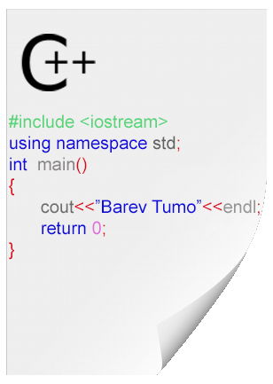

C++ ծրագրավորման լեզու

C++ (արտասանվում է ինչպես սի փլաս փլաս ˌsiːˌplʌsˈplʌs) ընդհանուր նշանակության ծրագրավորման լեզու, որը համարվում է «միջին-մակարդակի» լեզու, քանի որ թույլատրում է ինչպես ցածր մակարդակի, այնպես էլ բարձր մակարդակի ծրագրավորում։ Այն ստատիկորեն տիպավորվող, բազմապիսի մոտեցումներ թույլատրող (multi-paradigm), սովորաբար կազմակվող (կոմպիլյացվող) լեզու է։
Բյորն Ստրաուստրուպը, ստեղծեց C++ լեզուն Bell Labs-ում 1979-ին, որպես C ծրագրավորման լեզվի բարելավում և անվանեց այն "C with Classes": 1983-ին այն վերանվանվեց C++ -ի։
C++ -ը ամենատարածված ծրագրավորման լեզուներից է։ Կիրառման ոլորտներից են համակարգային ծրագրավորումը, կիրառական ծրագրերի ստեղծումը, ֆիզիկական սարքավորումների՝ օպերացիոն համակարգի հետ կապի ապահովման ծրագրերի ստեղծումը, բարձր արդյունավետությամբ աշխատող սերվեր և օգտագործող ծրագրերի ստեղծումը, ինչպես նաև, ներդրված ծրագրերի և համակարգչային խաղերի ստեղծումը։
Օգտակար հղումներ՝